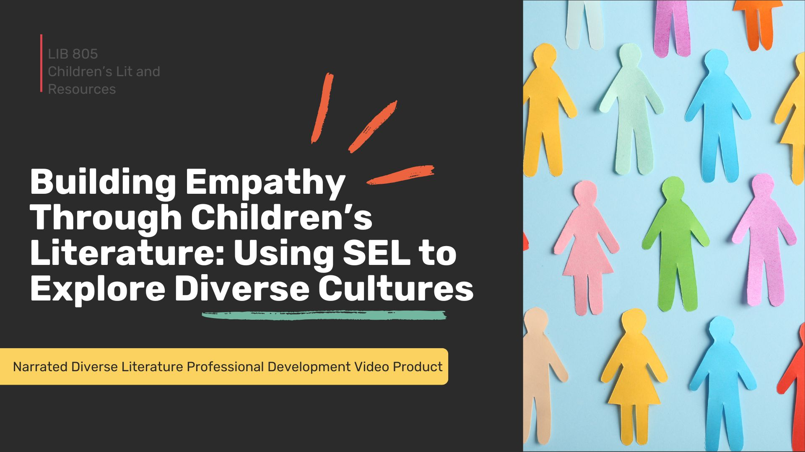
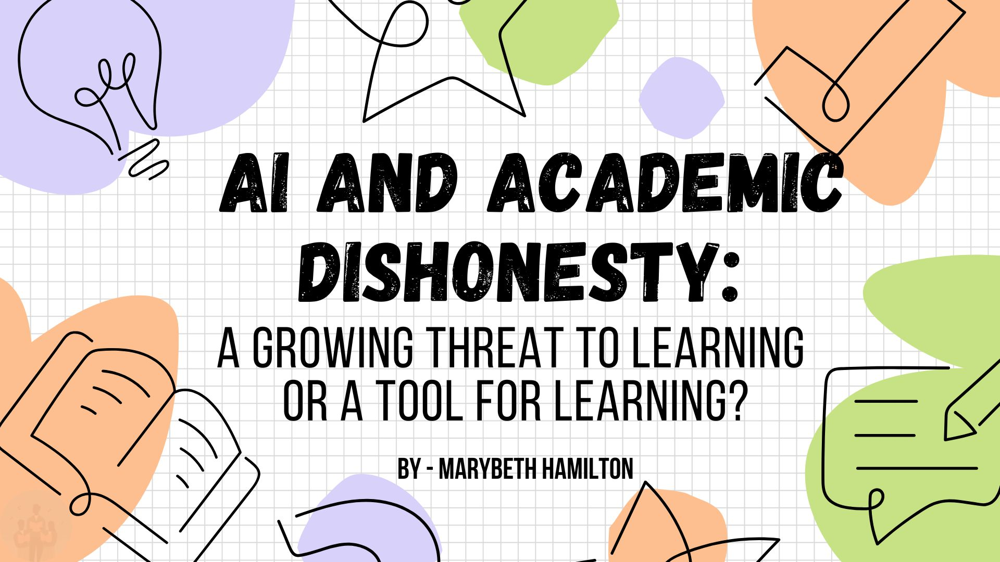

Building Empathy Through Children's Literature: Using SEL to Explore Diverse Cultures
This professional development session explores how children's literature can be used to foster empathy, cultural understanding, and social-emotional learning in the classroom.
View Presentation
AI and Academic Dishonesty: A Growing Threat to Learning or a Tool for Learning?
This session examines the role of artificial intelligence in education, discussing both the challenges of academic integrity and the opportunities AI provides for teaching and learning.
View PresentationInstructional Expertise and Training Areas
In addition to sample sessions, I offer professional development on a variety of topics focused on literacy, instructional strategies, and educational technology.
- Teaching Exceptional Children’s Literature – Using diverse, inclusive texts to support SEL, representation, and student engagement.
- Literature Teaching Strategies – Close reading, discussion techniques, and interactive approaches to deepen comprehension and critical thinking.
- AI and Technology Use in the Classroom – Practical and ethical ways to integrate AI tools and digital resources while maintaining academic integrity.
- Engaging Students Through Literacy Across the Curriculum – Embedding reading and writing strategies in all subject areas.
- Media Literacy and Digital Citizenship – Helping students evaluate sources, navigate misinformation, and use technology responsibly.

Contact Me
Let's Collaborate on Professional Learning
I enjoy partnering with schools and educators to design meaningful professional learning experiences. Whether you're looking for a conference presenter, school-based training, or collaborative planning support, I would love to connect and explore ways we can work together.
- Custom professional development sessions
- Literacy and instructional coaching support
- AI and technology integration training
- Cross-curricular literacy strategies